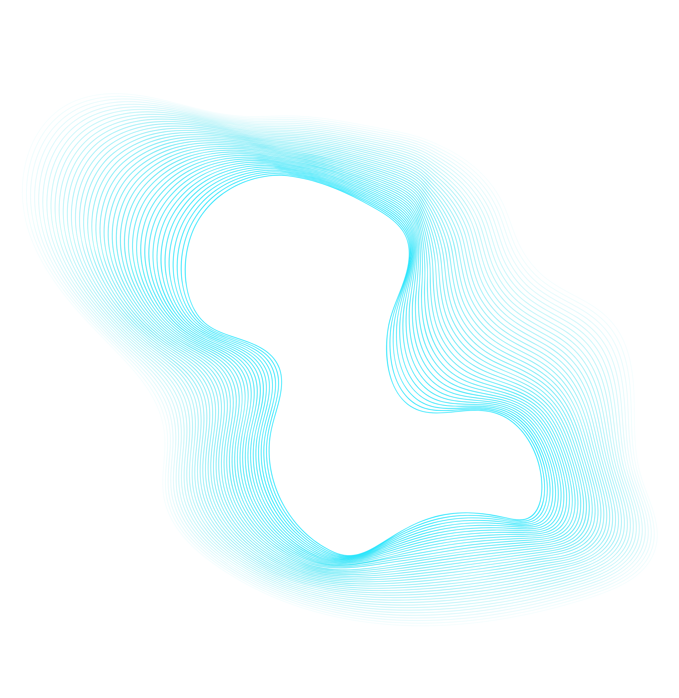

Closed captions
Voor het vak Webtypografie heb ik de closed captions van de film Blade Runner meer emotie gegeven om zo de ervaring van het kijken van een film als dove of slechthorende te verbeteren.
Website 
Met dit project heb ik de ervaringen van doven en slechthorende tijdens het kijken van een film verandert door verschillende geluiden en ondertitels visueler te weergeven en zo meer emotie aan de film toe te voegen. Hiervoor heb ik een fragment uit de film Blade Runner gebruikt om mee te werken. Ik heb vervolgens de achtergrond van het fragment geanimeerd, door verschillende kleuren te gebruiken om gevoelens uit te drukken. Verder heb ik ook nog de juiste typografie bij het fragment gezocht en vormgegeven. Ik heb alle animaties en ondertitels geprogrammeerd met behulp van HTML, CSS en JavaScript. Verder heb ik onderzoek gedaan naar hoe kleuren werden gebruikt om emoties weer te geven in de film en heb dit ook toegepast in mijn eigen project. In de film wordt namelijk gebruik gemaakt van "color-theory", de emoties van het karakter of de scene worden nog eens benadrukt door een specifieke kleur aan de scene toe te voegen.